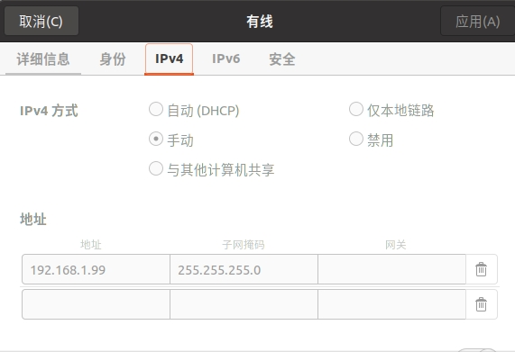

安装与配置
系统要求
| 对象 | 推荐 | 支持范围 |
|---|---|---|
| 操作系统 | Ubuntu 22.04 | Ubuntu 20.04 - 24.04 |
| 架构（PC） | x86_64 | x86_64 |
| 架构（机器人） | aarch64 | aarch64 |
| Python | 3.8+ | 3.8 - 3.14 |
| 存储空间 | 16GB | 3GB+ |
术语说明
- XCU：基础运算平台，负责底层控制和基础运算
- Orin：高算力运算平台，负责图像处理和AI计算
模式一：机器人端部署
适用场景： 生产环境部署，实时性要求高的应用
特点： 无网络延迟，通信开销最小
1. 连接机器人网络
1.1 开机后在网络选择界面连接WiFi


1.2 在Network界面查看机器人IP地址

2. 部署SDK到机器人
2.1 在PC上执行部署脚本
2.2 根据提示输入连接信息
- 用户名：
galbot - Orin IP地址：例如
192.168.120.180 - 密码：
gb@2023

部署结果
动态库自动安装到：/data/galbot/lib
2.3 验证安装
预期输出
显示 libgalbot_g1_sdk.so 和 libgalbot_g1_sdk.so.1.5.0

3. 在PC上安装SDK
进入到SDK目录下执行安装脚本
4. 编译程序
4.1 在PC上交叉编译（aarch64）
cd examples/cpp/
mkdir -p build
cd build
cmake ../ -DCMAKE_TOOLCHAIN_FILE=../cmake/linux-aarch64-gcc940.cmake
make
4.2 传输可执行文件到机器人的Orin上
5. 运行程序
5.1 C++程序
5.2 Python程序
模式二：PC端部署
适用场景： 开发调试，快速迭代
特点： 开发便捷，支持局域网远程控制
1. 物理连接
使用网线连接PC与机器人

2. 配置网络
2.1 配置PC网口IP
- IP地址：
192.168.1.99（或同网段其他地址） - 子网掩码：
255.255.255.0
Ubuntu设置路径：设置 → 网络 → 有线设置 → IPv4 → 手动

验证配置：
预期输出
显示 inet 192.168.1.99

2.2 配置PC端IP配置文件
文件路径：/data/config/embosa_ip_config.json
配置示例（假设PC: 192.168.1.99, XCU: 192.168.1.66, Orin: 192.168.1.88）：
{
"embosa_ip": {
"local_interface": [
"192.168.1.99"
],
"peer_lists": [
"192.168.1.66",
"192.168.1.88"
]
}
}
2.3 配置Orin端IP配置文件
前提条件
需先通过WiFi连接Orin，参考模式一步骤1
2.3.1 登录Orin
2.3.2 编辑配置文件
2.3.3 配置内容
重要
192.168.100.88 和 192.168.100.66 是Orin与XCU内部直连IP，必须保留
{
"embosa_ip": {
"local_interface": [
"192.168.100.88",
"192.168.1.88"
],
"peer_lists": [
"192.168.100.66",
"192.168.1.99"
]
}
}
2.4 配置XCU端IP配置文件
2.4.1 登录XCU
2.4.2 编辑配置文件
2.4.3 配置内容
{
"embosa_ip": {
"local_interface": [
"192.168.100.66",
"192.168.1.66"
],
"peer_lists": [
"192.168.100.88",
"192.168.1.99"
]
}
}
2.5 验证网络连接
必须操作
配置修改后必须重启机器人
重启后测试连接：
预期结果
正常返回ping响应

3. 在PC上安装SDK
进入到SDK目录下执行安装脚本
4. 编译程序
在PC上编译（x86_64）
cd examples/cpp/
mkdir -p build
cd build
cmake ../ -DCMAKE_TOOLCHAIN_FILE=../cmake/linux-x86_64-gcc940.cmake
make
5. 运行程序
5.1 配置环境变量
路径说明
/opt/galbot/为默认安装路径，可根据自己的安装路径进行修改
环境变量持久化
5.2 运行C++程序
5.3 运行Python程序